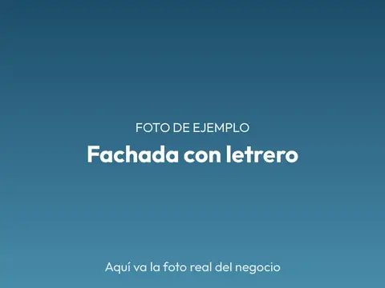
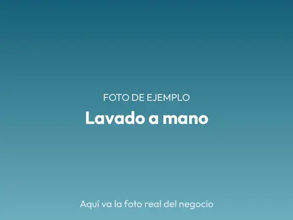
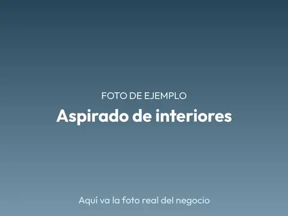
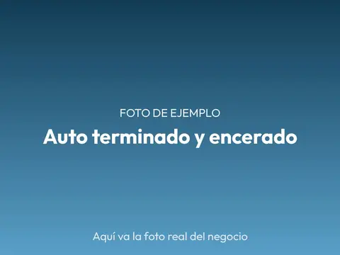

Qué ofrecemos
- Lavado a mano
- Sin cita
- Sala de espera con sombra
- Autos, camionetas y motos
Lavado exterior a mano
Carrocería, rines y llantas con shampoo neutro y secado con microfibra.
$120 por auto, IVA incluido. Vigente hasta el 31 de diciembre de 2026.
Lavado completo
Exterior a mano más aspirado, tablero y vidrios por dentro.
$180 por auto, IVA incluido. Vigente hasta el 31 de diciembre de 2026.
Lavado de motor
Desengrasado con cuidado de las partes eléctricas.
Encerado
Cera en pasta aplicada a mano para proteger la pintura.
Lavado de vestiduras
Asientos y alfombras con máquina de inyección y extracción.
Camionetas y motos
Los mismos servicios para camionetas, SUV y motocicletas.
Pregunte el precio por WhatsApp; le respondemos en horario de atención.
Formas de pago: efectivo y transferencia.
Fotos




Ubicación y horario
Av. Ejemplo 100, Col. Centro, 63000 Tepic, Nayarit
A media cuadra de la tienda de la esquina, portón azul.
Cómo llegarHorario
- Lunes a sábado
- 8:00 a 18:00
- Domingo
- 8:00 a 14:00
Cerrado el 25 de diciembre y el 1 de enero.
¿Le ayudamos?
Mándenos un mensaje y le respondemos en horario de atención.
Escríbanos por WhatsAppTeléfono: 311 000 0000